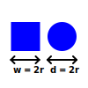
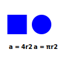
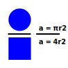
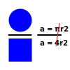
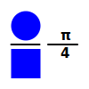

The π Pond calculates π (Pi) by firing cannonballs at random into a pond.
In its own, strange, way, the π Pond is a way of getting data out of randomness.
Imagine a square and a circle of equal width.
The area of the circle is, of course, πr2, which means the area of the square is (2r)2.
(2r)2 is the same as (2r)(2r), and can be simplified to 4r2.
The ratio of the two areas is πr2 divided by 4r2.
The r2's cancel each other out…
…leaving us with π divided by four.
If we multiply the ratio by four, we can get π by itself.
Therefore, π is the ratio of the area of a circle and the area of a square, multiplied by four.
In the case of the π Pond, π is approximated as the number of cannonballs that land in the pond, divided by the total number of cannonballs fired, multiplied by four.
By plotting coordinates onto the field (the square) at random, and checking which coordinates fall within the pond (the circle), we can approximate the area of the two shapes. The more random coordinates that are plotted, the closer the approximation of π.
The π Pond plots random coordinates (the cannonballs) onto a grid (the pond). By counting the number of shots that land in the pond, versus the total number of shots fired, the program can approximate the ratio of the two areas. When this ratio is multiplied by four, you get an approximation of π.
The π Pond is limited by resolution, and by limitations of the random-number generator used.
The program is currently using JavaScript's built-in Math.random() method, which in turn is probably using the xorshift128+ algorithm adopted by most web browsers. xorshift128+ produces numbers which appear random enough, but are far from truly random.
Even then, the π Pond will consistently return 3.1 after 1,000 shots.
The π Pond was inspired by a challenge in A.K. Dewdney's The Armchair Universe, a collection of articles about recreational computer science from Scientific American.
The π Pond was programmed using Vanilla JS and the HTML5 Canvas element.
{kind=link}